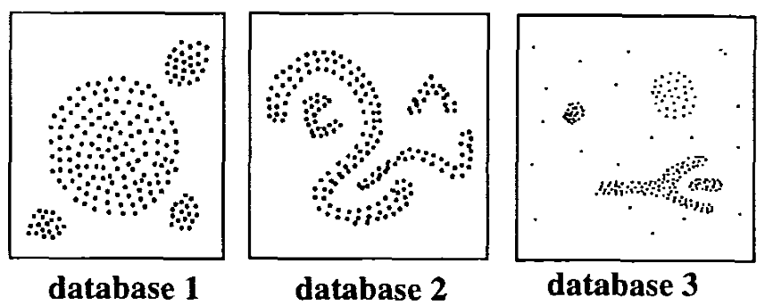

Data VisualizationDBSCAN VisualizationBy:Manshan Lin, Xin Tong
Application
Algorithm
Partitioning methods (K-means, PAM clustering) and hierarchical clustering are suitable for finding spherical-shaped clusters or convex clusters. In other words, they work well for compact and well separated clusters. Moreover, they are also severely affected by the presence of noise and outliers in the data.
The plot above contains 5 clusters and outliers, including:
2 ovales clusters
2 linear clusters
1 compact cluster
Given such data, k-means algorithm has difficulties for identifying theses clusters with arbitrary shape.
We know there are 5 five clusters in the data, but it can be seen that k-means method inaccurately identify the 5 clusters.
The basic idea behind density-based clustering approach is derived from a human intuitive clustering method.
For instance, by looking at the figure below, one can easily identify four clusters along with several points of noise, because of the differences in the density of points.

As illustrated in the figure, clusters are dense regions in the data space, separated by regions of lower density of points. In other words, the density of points in a cluster is considerably higher than the density of points outside the cluster (“areas of noise”).
DBSCAN is based on this intuitive notion of “clusters” and “noise”. The key idea is that for each point of a cluster, the neighborhood of a given radius has to contain at least a minimum number of points.
DBSCAN works as such:
Divides the dataset into n dimensions
For each point in the dataset, DBSCAN forms an n dimensional shape around that data point, and then counts how many data points fall within that shape.
DBSCAN counts this shape as a cluster. DBSCAN iteratively expands the cluster, by going through each individual point within the cluster, and counting the number of other data points nearby.
The left image depicts a more traditional clustering method, such as K-Means, that does not account for multi-dimensionality. Whereas the right image shows how DBSCAN can contort the data into different shapes and dimensions in order to find similar clusters. We also notice in the right image, that the points along the outer edge of the dataset are not classified, suggesting they are outliers amongst the data.
Advantages of DBSCAN:
Is great at separating clusters of high density versus clusters of low density within a given dataset.
Is great with handling outliers within the dataset.
Interesting Simulation
Click here to access DBSCAN simulation